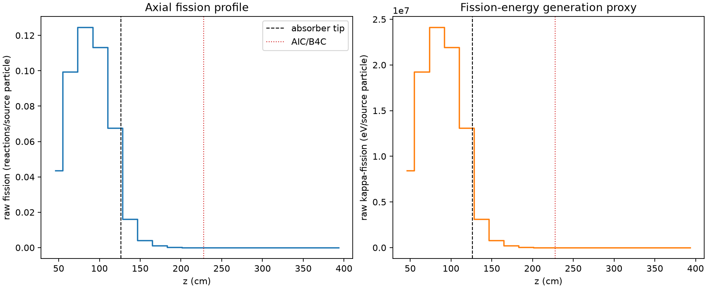
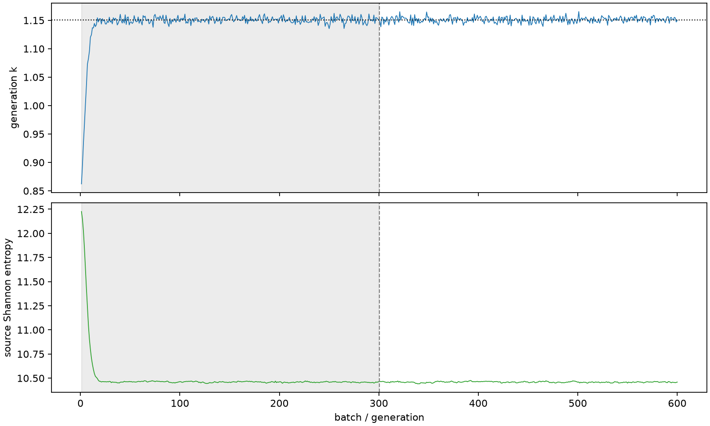

| field | value |
|---|---|
| experiment | V2-STAGE_128_OGRENCI_03-0011 |
| k | 1.1509336372053138 |
| MC standard error | 0.0001884824739720905 |
| seconds | 938.2839332149961 |
| acceptance | not_assessed |
| convergence | review_required |
Completed is output integrity only; physical and statistical review required. Zero tallies do not prove zero production or zero uncertainty.
| diagnostic | value |
|---|---|
| geometric fuel voxels | 5280 |
| zero fission tally voxels | 1659 |
| low signal fuel voxels | 2694 |
| low signal fission share | 7.894477882135515e-05 |
| low signal kappa share | 7.897285796173424e-05 |
| important fission share | 0.950148676154957 |
| previous filter included | 2586 |
| duration estimate s | 1562.5173488400023 |
| actual minus estimate s | -624.2334156250063 |
| fission relative MC error | statistics |
|---|---|
| all_geometric_fuel | {"voxels": 5280, "positive_mean_voxels": 3621, "zero_mean_voxels": 1659, "undefined_relative_error_voxels": 1659, "median": 0.02672115855028191, "p95": 1.0, "maximum": 1.0000000000000002} |
| low_signal | {"voxels": 2694, "positive_mean_voxels": 1035, "zero_mean_voxels": 1659, "undefined_relative_error_voxels": 1659, "median": 0.6671342289194211, "p95": 1.0, "maximum": 1.0000000000000002} |
| important_95pct | {"voxels": 1308, "positive_mean_voxels": 1308, "zero_mean_voxels": 0, "undefined_relative_error_voxels": 0, "median": 0.005445630400891188, "p95": 0.008353675745193828, "maximum": 0.009987791701995033} |
| outside_previous_filter | {"voxels": 2694, "positive_mean_voxels": 1035, "zero_mean_voxels": 1659, "undefined_relative_error_voxels": 1659, "median": 0.6671342289194211, "p95": 1.0, "maximum": 1.0000000000000002} |
| kappa_fission relative MC error | statistics |
|---|---|
| all_geometric_fuel | {"voxels": 5280, "positive_mean_voxels": 3621, "zero_mean_voxels": 1659, "undefined_relative_error_voxels": 1659, "median": 0.026681478193028386, "p95": 1.0, "maximum": 1.0000000000000002} |
| low_signal | {"voxels": 2694, "positive_mean_voxels": 1035, "zero_mean_voxels": 1659, "undefined_relative_error_voxels": 1659, "median": 0.668012634272456, "p95": 1.0, "maximum": 1.0000000000000002} |
| important_95pct | {"voxels": 1308, "positive_mean_voxels": 1308, "zero_mean_voxels": 0, "undefined_relative_error_voxels": 0, "median": 0.005439489957317849, "p95": 0.0083437195395734, "maximum": 0.009975270119322368} |
| outside_previous_filter | {"voxels": 2694, "positive_mean_voxels": 1035, "zero_mean_voxels": 1659, "undefined_relative_error_voxels": 1659, "median": 0.668012634272456, "p95": 1.0, "maximum": 1.0000000000000002} |
| axial bin | fission share | kappa-fission share |
|---|---|---|
| 1 | 0.09281467488682542 | 0.09281713883951136 |
| 2 | 0.21164599707418497 | 0.21164113117848696 |
| 3 | 0.26491852196307797 | 0.2649125942493392 |
| 4 | 0.24077841501161568 | 0.24077283628441418 |
| 5 | 0.14395466263527668 | 0.14395431689225818 |
| 6 | 0.03415680001474752 | 0.03416719162724682 |
| 7 | 0.008687274936378794 | 0.008690109313839152 |
| 8 | 0.002257888595461347 | 0.0022586359413668726 |
| 9 | 0.0005808220020574502 | 0.0005810425653033068 |
| 10 | 0.0001572380126812988 | 0.00015727915555255976 |
| 11 | 3.765425747657765e-05 | 3.766908464269203e-05 |
| 12 | 7.636273920330511e-06 | 7.639550343597743e-06 |
| 13 | 1.4809511905229241e-06 | 1.482141348317754e-06 |
| 14 | 4.3521346507941417e-07 | 4.3522667476033205e-07 |
| 15 | 4.923325650666725e-07 | 4.921177675077862e-07 |
| 16 | 5.839075316508803e-09 | 5.831904637942406e-09 |
| 17 | 0.0 | 0.0 |
| 18 | 0.0 | 0.0 |
| 19 | 0.0 | 0.0 |
| 20 | 0.0 | 0.0 |
Histories include the inactive-to-active transition at batch 300. kappa-fission approximates fission energy production, not total heat deposition.

